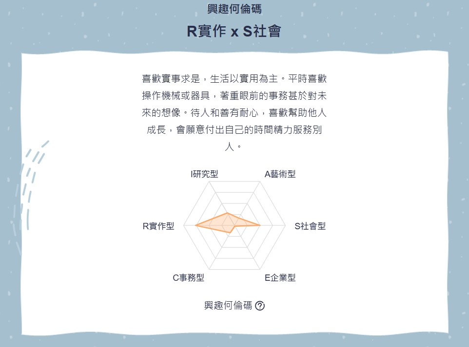

從我的何倫碼結果「R實作 × S社會」來看，我適合程式設計師有明確理由。
代表我偏好動手解決問題、操作工具並處理具體任務，而程式設計本質就是以程式語言作為工具，將抽象需求轉換為可運作的系統，這與我務實、重視效率與技術導向的特質高度一致。
代表我具備耐心與協助他人的傾向，這在現代軟體開發中十分重要，因為程式設計師需要與使用者及團隊溝通需求，並透過技術改善他人的工作與生活。我能結合技術實作與同理需求，不只會寫程式，也能開發出真正解決問題的系統，因此特別適合朝程式設計或軟體開發方向發展。

Realistic
實用型的人是典型的實作者(Doer)，性格特徵為情緒穩定、坦誠直率、獨立實際、謙虛有禮、穩健節儉。
在職業性格傾向上，喜歡講求實際、動手操作、按部就班完成實際用途物品等技術性、體力性的工作，例如操作機械、工具、運動設備或養育動物等工作，寧願實際動手作而不喜歡多言，比較喜歡獨立做事，避免主觀性、學術性、富想像力或人際互動的工作類型。
實用型的人的價值觀是重視傳統的，將雄心與自我控制視為重要的價值觀，講求實事求是而非寬容的態度，形成較封閉的價值觀系統。
在問題解決策略上，偏好於具體、實際和有架構的解決方案或策略，而非學術性、富想像力或人際互動的行動。
實用型適合從事技術性、體力性之典型職業例如：機械維護師、電器工程人員、太空人、塔台工程師、飛行員、廚師、工匠、農業工作、汽車修護員、警察、消防員等。
Investigative
研究型的人是典型的“思辨者”(Thinker)，性格特徵為好奇分析、謹慎條理、理性獨立、謙遜、精確、批判。
在職業性格傾向上，喜歡運用頭腦，善於觀察、思考、分析與推理，依自己的步調追根究底、解決問題，不喜歡他人給予指引，做事時能夠提出新的想法與策略，但對實際解決問題的細節較無興趣，喜歡與符號、概念、文字有關的工作，不必與人有太多的接觸或運用體力的工作類型。
研究型的人的價值觀是自由不守舊的，對嶄新見解和經驗持開放態度，且擁有廣泛的興趣，不是很在乎別人看法，喜歡和有相同興趣或專業的人討論，否則還不如自己看書思考。
在問題解決策略上，會尋找具挑戰性的問題，仰賴於思考、蒐集資訊和細心分析，以得到與學術性事務相關的客觀資料；較少留心個人感受或社會環境。
研究型適合從事需要數理及科學能力，而較不需要人際領導能力的工作，其典型職業為：工程師、化學家、數學家、物理學家、地質學家、醫學家、心理學家、營養師、獸醫、藥劑師等。
Conventional
事務型的人是典型的“文書者”(Organizer)，性格特徵為：規律、精確、有條理、堅毅、謹慎、有效率、穩重、愛整潔、講求實際、保守、服從指示。
在職業性格傾向上，事務型的人個性謹慎，做事講求規矩與精確，樂於處理資料、計算及文書，喜歡在具有明確規範的環境下工作，能夠按部就班、有效率、精確仔細地完成主管交辦的工作。
事務型的人的價值觀是較傳統的，會選擇社會所認同的工作及價值觀行事，生活觀是講求踏實與實際，不喜歡改變或創新，也不喜歡冒險或領導。
在問題解決策略上，會選擇跟隨既定的法則、常規和程序行事，仰仗權威的建議和諮詢、尋求實用的解決方案，能夠制定有次序且仔細的計畫解決問題。
事務型的人喜歡從事規律與有條理的工作，其典型職業為：會計師、精算師、銀行人員、行政人員、出納、速記人員、簿記人員、場記、電腦系統分析師、資產管理專員等。
若以職業性格碼來描述我的職業性格，事務型的特質是個性謹慎、做事講求規矩與精確，樂於處理資料、計算及文書，喜歡在具有明確規範的環境下工作；研究型的特質是喜歡運用頭腦，善於觀察、思考、分析與推理，喜歡與符號、概念、文字有關的工作；實用型的特質是喜歡講求實際，動手操作、按部就班完成實際用途物品等技術性、體力性的工作。